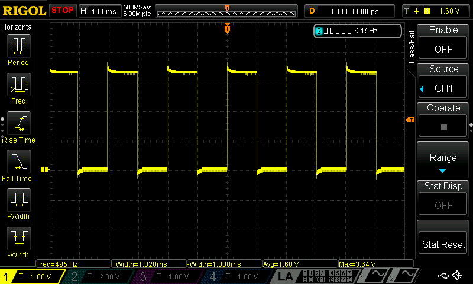

Lab 4: Digital Audio
Introduction
In this lab we were tasked with using our STM32 MCU to play music.
Lab Overview
The goal of the lab was to use the internal peripheral timers of the MCU to generate square waves and toggle a GPIO pin at a specicific frequency. The GPIO pin was then hooked up to an audio circuit that magnified the signal and drove a small speaker. Additionally, the MCU was programmed to read a list of notes (Hz) and duration (ms) to play a score.
MCU Design
Headers
The first piece designed in this lab were the headers for the specific modules used in the lab as we were not allowed to use any preexisting headers. The header files included were for the RCC, GPIO, TIM6 and TIM16 modules.
// TIM16.h
// Header for basic timer
#ifndef TIM16_H
#define TIM16_H
#include <stdint.h>
///////////////////////////////////////////////////////////////////////////////
// Definitions
///////////////////////////////////////////////////////////////////////////////
#define __IO volatile
// Base addresses
#define TIM16_BASE (0x40014400) // base address of TIM16
/**
* @brief Reset and Clock Control
*/
typedef struct
{
__IO uint32_t TIM_CR1; //< tim control register 1
__IO uint32_t TIM_CR2; // tim control register 2
uint32_t RESERVED0; // Reserved,
__IO uint32_t TIM_DIER; // tim DMA/Interrupt enable register
__IO uint32_t TIM_SR; // time status register
__IO uint32_t TIM_EGR; // tim event generation register
__IO uint32_t TIM_CCMR1; // tim capture/compare mode register
uint32_t RESERVED1; // Reserved,
__IO uint32_t TIM_CCER; // capture/compare mode register
__IO uint32_t TIM_CNT; // tim counter
__IO uint32_t TIM_PSC; // tim prescaler
__IO uint32_t TIM_ARR; // time auto reload register
__IO uint32_t TIM_RCR; // repetition counter register
__IO uint32_t TIM_CCR1; // capture/compare register 1
uint32_t RESERVED2; // Reserved,
uint32_t RESERVED3; // Reserved,
uint32_t RESERVED4; // Reserved,
__IO uint32_t TIM_BDTR; // tim break and dead-time register
__IO uint32_t TIM_DCR; // DMA control register
__IO uint32_t TIM_DMAR; // 6 DMA address for full transfer
__IO uint32_t TIM_OR1; // option register 1
uint32_t RESERVED5; // Reserved,
uint32_t RESERVED6; // Reserved,
uint32_t RESERVED7; // Reserved,
__IO uint32_t TIM_OR2; // option register 2
}An example header above shows how the Timer 16 module is broken up into different registers starting at the base address of TIM16 making it easy to change a bit in a specific register. These headers could then be used in main to shift bits and call other related functions.
Clock Control
Below is the clock tree of the entire MCU. The first step is sending the system clock signal to all peripherals as they are powered off on reset to save power.
For this lab I used the default MSI 4 MHz clock as the system clock and enabled the GPIO, TIM6, and TIM16. Additionally before entering timer 6 and timer 16 a prescaler was used to divide the system clock to a 1 MHz signal. Enabling the peripherals and scaling down the clock involved setting the correct registers of the RCC module (reset & clock control) which can be seen at the top of main.
Timer 6 (delay)
Timer 6 or TIM6 which is a basic clock, was used to create a accurate delay in milliseconds that would be used to hold notes for a certain amount of time. You can see how it recieves its internal clock from RCC.
A function called setUpTIM6 was used where timer 6’s inputed clock was scaled down by a factor of 10 leaving it around 100 kHz. It was then updated and its counter was enabled to start counting up at a rate of around 100 kHz.
For the delay delayTIM6(int ms) was used. In this function the timer’s auto reload bits were set. Auto reload is a feature that resets the timer’s counter back to zero and raises a status register count matches the ARR register. This allows us to contorl the delay as the auto reload register was set depending on the input ms. The program would then wait till the status register flag was raised before continuing on with any other code. Finally it reset the status register back to zero for the next delay.
Timer 16 (PWM)
Timer 16 or TIM16 is a general purpose timer that has more features than timer 6. It was used to create a PWM signal that was then routed to a GPIO pin. Similarly it recieves its internal clock from RCC.
The setUpPWM(int frequency, int dutyCycle) was used to enable the timer and have it output a signal at the correct frequency and duty cycle. For PWM the auto reload register and capture/compare register must be set. This is because the output is low when ARR (auto reload register) < CCR1 (capture/compare register) and high when ARR > CCR1. ARR was set based on the timers clock input as well as the function inputs frequency and CCR1 was set to a fraction of ARR depeding on what dutyCycle was inputed as.
From there the auto preload reload, capture/compare, PWM mode, main output, and preload register are enabled in addition to setting the capture/compare channel as an output. Lastly everything was updated and then the counter was enabled for timer 16 to begin counting up.
To change the frequency or duty cycle changeFreq(int frequency, int dutyCycle) was used. This function then set ARR and CCR1 according to the specified frequency and duty cycle and updated timer 16.
GPIO
In E85 we had used GPIO as standard output or input, either reading in low and high signals or outputting low and high signals. But now we want to connect it the output of our timer 16. To do this GPIO alternate function was used. Inside the STM 32 every pin has alternate functions which you can find in the data sheet like the example below.
As we can see, the output from TIM16_CH1 which is the PWM output in our case, can be routed to pin PA6 if its using alternate function 14. This involved setting the GPIO alternate function low register so that pin 6 was set to AF14.
Piecing it Together
Once the two timers (delay and PWM) were created and the GPIO was initiated to output to its correct alternate function, the rest was simple. The main function of the c code iterated through an array of frequencies and delays. The code would then tell the MCU to change the frequency of the output PWM and delay it for the specific amount of time till it had to change to the next frequency.
Calculations
The first calculation was to calibrate exactly what the MSI clock was running at. When the MSI (default at 4 MHz) was routed into TIM16 it was prescaled by four meaning it should’ve have been at a rate of 1 MHz. To evaluate the true frequency of the MSI the following calculations were used.
I started with the ARR formula that calculated the specific auto reload register value for a desired pitch of 496 Hz. When this ARR was used the oscilloscope showed that the actual pitch was around 488 Hz. Using this data the real speed of the scaled MSI could be calculated at 985.533 KHz. While it looks quite far from the expected its only around 1.5% off and the MCU clocks can have error in this range. After using the correct clock speed you can see below we get a much closer pitch of 495 Hz (within 1%).

The maximum and minimum duration and pitch then had to be calculated to make sure it could accurately play musical pieces. The calculations below show what the range of pitch and delays are. In the calculations 1 is added to Arr as the counter switches one clock cycle after the Arr value is hit.
For the duration timer I scaled down the clock by 10 to get an input clock of 98.453 Hz which leaves us with a range of delays from 0.02 to 665 ms. In hindsight I did not need to scale down the clock this much as we don’t need a delay that small, however it fit within the bounds of the songs we were trying to play. For the frequency the clock wasn’t scaled down any further which left us with a range of 15 Hz to 492 kHz which goes below and above the range of human hearing making it perfect for an audio output.
Wiring the Board
The wiring for this lab was simple. The output PWM needed to be routed to a small speaker so that the signal could be heard. However the MCU does not have enough current output to drive a speaker. Due to this constraint an audio amplifier was used in the circuit below.
The LM348 was powered by the 5V voltage regulator on our PCB allowing the output to reach a max of 5 V and have sufficient current. The amplifier did not use any negative feedback but instead just multiplied V+ by the amplifier’s gain of 20. This obviously railed out quickly as PA6 outputted 3.3 V. To control the output voltage and to not annoy others’s in the lab a 10 kOhm potentiometer was used to vary the input signal before it got amplified acting as a volume knob. For fun I also powered the audio amplifier with 12 V from a desktop powersupply and was able to greatly increase the volume. Students in the ECF claimed they could hear it accross the hall.
Outcome
From the two videos below you can see my MCU circuit succesffuly playing Für Elise as well the melody of Mo Bamba. Additionally volume support is evident through the use of the potentiometer.
While this lab was straightforward there were a lot of hiccups and slowdowns. A lot of this frustration came from the PWM as my code had to enable a lot of specific bits in the correct order and it turned out I was forgetting one important bit. Additionally it was hard to debug this lab and know which register we might have been missing, as if 15/16 of the registers were correct but that last one was wrong there would be zero output. However I do feel a lot more comfortable using the STM32 reference manual and data sheet now.
Time in lab: 19 Hours.